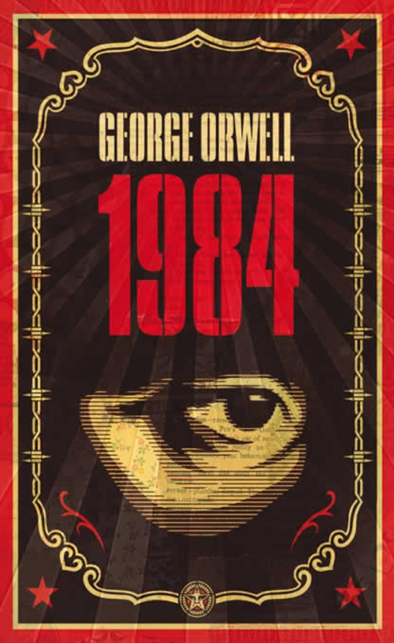

1984
Author: George Orwell
ISBN-10: 8499890946
ISBN-13: 978-8499890944
Price: $10.00
Description
Nineteen Eighty-Four, often published as 1984, is a dystopian novel by English author George Orwell published in 1949. The novel is set in Airstrip One (formerly known as Great Britain), a province of the superstate Oceania in a world of perpetual war, omnipresent government surveillance and public manipulation, dictated by a political system euphemistically named English Socialism (or Ingsoc in the government's invented language, Newspeak) under the control of a privileged elite of the Inner Party, that persecutes individualism and independent thinking as "thoughtcrime."
About the Author
His work is marked by lucid prose, awareness of social injustice, opposition to totalitarianism, and outspoken support of democratic socialism.
Orwell wrote literary criticism, poetry, fiction, and polemical journalism. He is perhaps best known for his dystopian novel Nineteen Eighty-Four (1949) and the allegorical novella Animal Farm (1945). His non-fiction works, including The Road to Wigan Pier (1937), documenting his experience of working class life in the north of England, and Homage to Catalonia (1938), an account of his experiences in the Spanish Civil War, are widely acclaimed, as are his essays on politics, literature, language, and culture. In 2008, The Times ranked him second on a list of "The 50 greatest British writers since 1945"
Orwell's work continues to influence popular and political culture, and the term Orwellian-descriptive of totalitarian or authoritarian social practices-has entered the language together with many of his neologisms, including cold war, Big Brother, thought police, Room 101, memory hole, newspeak, doublethink, and thoughtcrime.